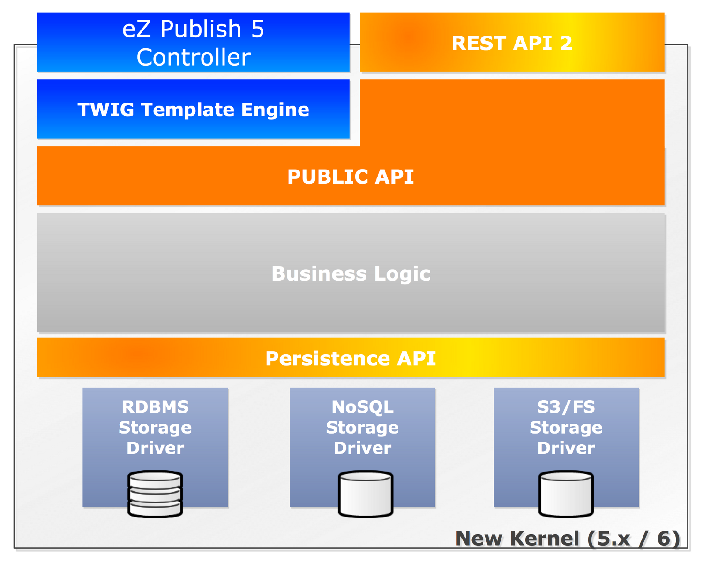

Me
- eZ Community member since 2005
- Part of the eZ Engineering team since 2011
- Lead engineer User Interface at eZ
- Webmaster of http://www.planet-ezpublish.fr/, powered by eZ Publish 5!
eZ Publish 3.x/4.x
eZContentObjectTreeNode, eZContentObject, eZContentClass, ...- Lots of static methods
- Almost no visibility (
private, protected, ...)
- Objects are tighly coupled
- Lazy loaded object attributes
- Barely testable
- Difficult to maintain
- Huge effort to introduce new storage system
Domain objects
| Content object |
Content |
| Tree node |
Location |
| Content class |
Content type |
| Content attribute |
Field |
| Datatype |
Field type |
| Content class attribute |
Field definition |
